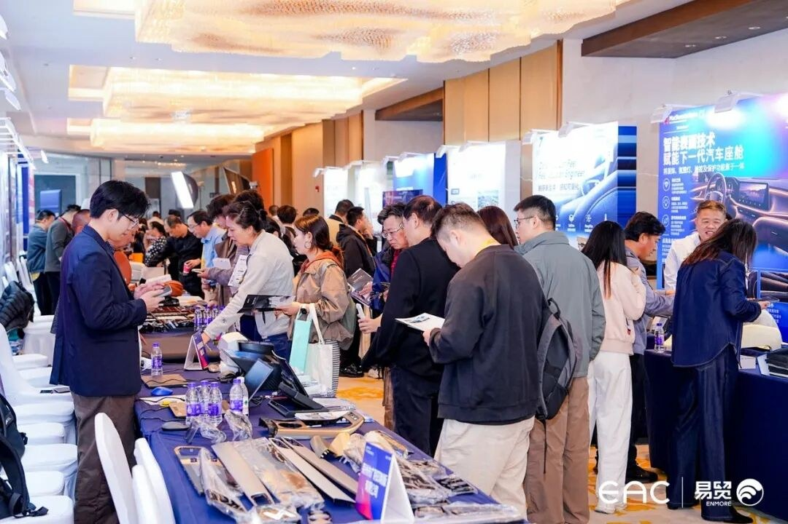

11월 13일, 정다밍문화산업그룹 양세신 회장은 상하이에서 개최된 「EAC 차세대 콕핏 시나리오 혁신 포럼」에 초청되어 「중국 옻칠의 자동차 산업 CMF 설계와 응용」을 주제로 강연하였으며, 600여 명의 완성차·부품사 관계자들과 함께 전통 천연 옻칠의 스마트 콕핏 CMF 분야 적용 전망을 논의했습니다.

콕핏 업계의 연례 행사
이번 포럼에는 32명의 연사와 200여 점의 혁신 전시품이 모였으며, 샤오미·XPENG·NIO·리샹(Li Auto)·체리·세레스(SERES)·길리·창안·상기·동풍·판아(PATAC)·이치(FAW) 등 완성차 기업들이 단체 참가했습니다. 참가자는 수석 엔지니어, 콕핏 아키텍트, 미래기술 전문가, CMF 컬러·텍스처 디자이너, 소재 엔지니어 등 핵심 직무를 아울렀습니다. AI 콕핏, 다감각 융합 경험, 스마트 서피스와 CMF 신소재가 이번 포럼의 최대 관심 주제였습니다.
중국 옻칠을 자동차 콕핏으로
스마트 인터랙션과 신소재에 초점을 맞춘 강연들이 많은 가운데, 양 회장의 강연은 수천 년의 역사를 지닌 동양 소재인 천연 옻칠에 스포트라이트를 비추었습니다. 강연에서는 옻칠의 소재 특성, 전통 칠공예와 자동차 내장 표면 장식의 결합 경로, 콕핏 CMF에서의 적용 시나리오와 지속가능성 가치를 다루며, 프리미엄 표면 장식 소재로서 옻칠의 디자인 언어와 엔지니어링 적용 방안을 교류했습니다.

옻칠이 차세대 콕핏에 적합한 이유
- 천연·친환경: 옻칠은 옻나무에서 채취하는 재생 가능한 천연 도료로, 지속가능·저탄소 내장을 추구하는 자동차 산업의 니즈에 부합합니다;
- 따뜻한 촉감과 광택: 옻칠의 은은하고 깊이 있는 광택과 촉감은 화학 코팅이 따라 하기 어려운 '프리미엄 감성'의 원천입니다;
- 유일무이한 질감: 변도(變塗), 묘금(描金), 유칠(漂流칠) 등 공예가 만들어내는 질감은 똑같은 것이 없어 내장 개인화·한정 커스텀에 최적입니다;
- 동양 미학 스토리: '백리천도일근칠(百里千刀一斤漆)'의 장인 스토리를 콕핏에 담아 브랜드 차별화와 문화적 부가가치의 원천을 제공합니다.
친바(秦巴) 산간에서 자동차 공장까지의 풀체인 역량
정다밍문화산업그룹은 12년간 친바 칠공예에 힘써 왔으며, 산시 안캉·언스(恩施)·청커우(城口)·상뤄(商洛)·중시(竹溪)에 5,000무(畝) 이상의 옻나무 재배 기지를 구축하고 「기업+협동조합+농가」 모델로 600여 명의 일자리를 창출했습니다. 이 풀체인 역량을 바탕으로 자동차 내장 부품사에 공정 선정·샘플 시제작부터 양산 도장까지 원스톱 서비스를 제공하며, 금속·티타늄·내장 부재 등 다양한 기재에 석목도(石目塗), 포목삼금(布目灑金), 근래도(根來塗), 청해파도(青海波塗), 브러시 도장, 패지(貼紙) 공법 등 표면 효과를 구현할 수 있습니다.
산업 분야 옻칠 도장 솔루션의 자세한 내용은 산업 응용 솔루션에서 확인하실 수 있으며, 포럼의 전체 보도는 「EAC 차세대 콕핏 시나리오 혁신 포럼 폐막」(전재)에서 읽으실 수 있습니다.
중국 옻칠이 시대에 다시 빛나도록
1925년 「정다밍」 상호가 우왕칠(牛王漆)을 다루던 시절부터 오늘날 자동차 산업 CMF의 논의에 이르기까지, 달라진 것은 적용 분야이며 달라지지 않은 것은 이 기예에 대한 신념입니다. 옻칠이 스마트 콕핏을 만날 때, 전통 공예와 현대 산업 디자인의 대화가 이제 막 시작되었습니다. 더 많은 완성차·부품 파트너와 손잡고, 다음 백 년에도 중국 옻칠이 시대에 다시 발견되기를 기대합니다.